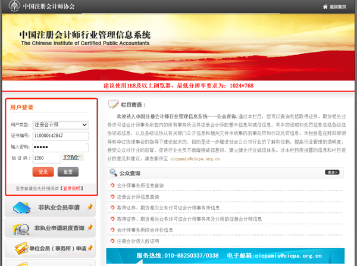
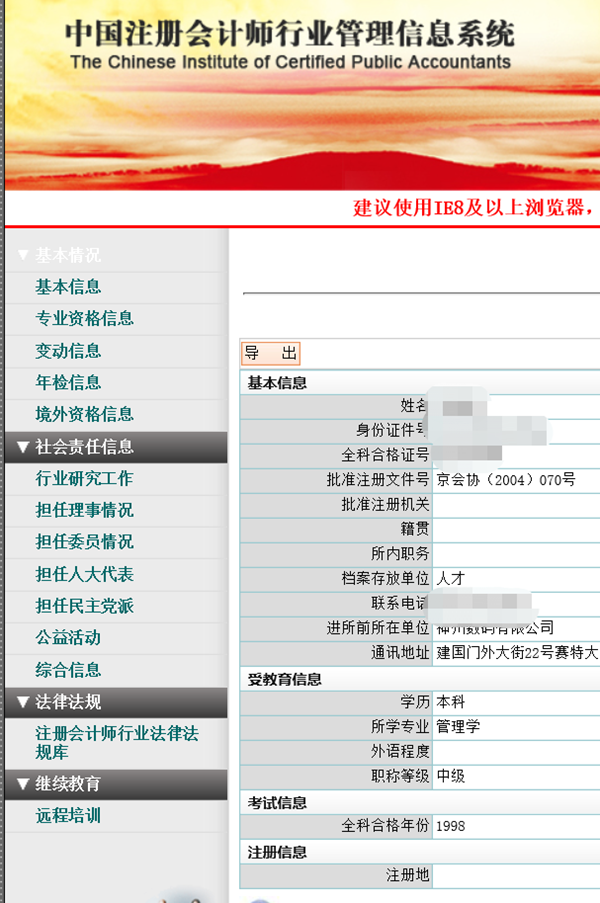
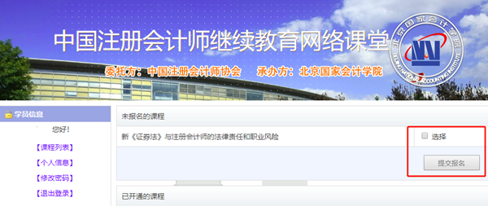
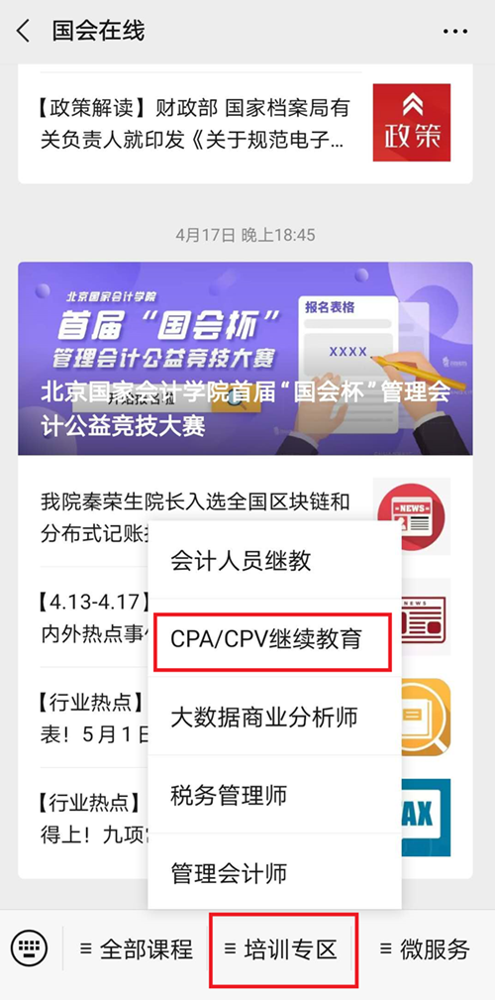

中注协委托北京国家会计学院举办新疆注册会计师全国统一考试网继续教育直播课堂
2020-09-24 04:22
根据《新疆注册会计师全国统一考试网2020年注册会计师培训计划》，新疆注册会计师全国统一考试网委托北京国家会计学院于2020年举办“新疆注册会计师全国统一考试网继续教育直播课堂”。有关通知转发如下。
中注协继续教育在线直播课堂系列
第六期：注册会计师行业改革发展40周年回顾与展望
根据计划，北京国家会计学院将于2020年9月25日上午9:30举办“直播课堂第六期：注册会计师行业改革发展40周年回顾与展望”，现将有关事项通知如下：
一、培训目标
通过对注册会计师行业40年改革发展历程的回顾和未来前景的展望，增强注册会计师行业的吸引力和影响力，增强注册会计师的荣誉感、归属感、责任感和使命感。
二、培训内容
1.教育先行，成就“注册会计师千秋万代大业”
2.奋力前行，地方注册会计师行业服务经济社会发展（江苏探索）
3.凤凰涅槃，我国会计师事务所发展、改革与壮大
三、师资力量
北京国家会计学院院长、中注协继续教育部主任、江苏省注协会长、信永中和会计师事务所创始合伙人等专家。
四、培训对象与名额
注册会计师，直播课堂报名名额上限为2000人。
五、直播时间
培训时间：2020年9月25日（周五） 9:30-12:00。
六、登陆学习流程
1.本次直播课堂设置两个报名入口，可任选其一：
其一：通过“中国注册会计师行业管理信息系统（会员版）”报名。注册会计师在IE浏览器中访问行业管理信息系统（会员版）（地址：http://cmispub.cicpa.org.cn/cicpa2_web/），在如下登录页面选择用户类型（注册会计师），输入会员证书编号、密码、验证码后，点击登录，进入会员首页。

登录成功后，点击左侧菜单中的【继续教育】栏目下的【远程培训】菜单，进入培训系统选择页面。
选择要报名培训的会计学院logo或者学院名称，浏览器将弹出新窗口，并在新窗口中进入对应会计学院的培训系统，无需再输入用户名、密码。
进入“新疆注册会计师全国统一考试网继续教育网络课堂”首页，选择直播课堂第六期，点击“提交报名”，显示“报名成功”，即完成培训报名。
（提示：参加直播当日培训的人员上限为2000人，报满为止。未报名成功的学员，可在直播结束次日后一周内，参照上述报名流程，报名观看直播回放。）

其二：通过北国会网站报名，北国会网站支持电脑端和手机端两种报名方式，具体操作方法如下：
（1）电脑端报名
通过国会在线“新疆注册会计师全国统一考试网继续教育”培训专区报名。地址：https://cpakt.e-nai.cn/，在如下图所示，在页面输入用户名（会员证书编号），无需输入密码，点击登陆进入网络课堂首页。
进入“新疆注册会计师全国统一考试网继续教育”首页，如下图所示，选择直播课堂第六期，点击“提交报名”，显示“报名成功”，即完成培训报名。
（提示：参加直播当日培训的人员上限为2000人，报满为止。未报名成功的学员，可在直播结束次日后一周内，参照上述报名流程，报名观看直播回放。）
（2）手机端报名
关注北京国家会计学院官方公众号“国会在线”，点击“培训专区”选择“CPA/CPV教育专区”，进入“中注协网络课堂”，后续操作步骤同电脑端报名。

“国会在线”公众号
2.获得学时的方法：全程参加直播或在直播结束后（一周内）完整观看回放➞完成课程评价/调查问卷➞自动获得规定的学时数。
七、培训班学习纪律
1.本平台只限新疆注册会计师全国统一考试网会员登陆学习。
2.报名的学员须按时登陆课堂，迟到15分钟以上者不予计算学时。由于直播课堂人数限制，禁止报名“卡位”后不参加培训的行为。
3.请严格遵守《网络安全法》《网络信息内容生态治理规定》等相关规定，自觉维护课堂纪律。
4.直播过程中发表评论须使用文明用语，请勿公开发表任何与学习内容无关的言论。
5.直播内容仅作为个人和事务所学习培训之用，禁止私自公开或议论直播内容。
6.凡违反上述规定者，有关系统记录通报所在地方注协，相应记入会员诚信档案。情节严重者，按照《新疆注册会计师全国统一考试网章程》和有关规定进行处理。
八、咨询热线
24小时客服热线：400-063-0318
项目负责人：焦老师：010-64505258 杨老师：010-64505067
 京公网安备 11010802022122号
京公网安备 11010802022122号